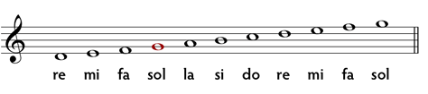

Pulsació - Cada un dels cops és una pulsació o temps.
Anomenam compàs a un patró de pulsacions.
Normalment trobam compassos de 2, 3 i 4 temps. Encara que hi pot haver d'altres.
Els compassos es solen indicar d'aquesta manera:
| Compàs de 2 temps | |
| Compàs de 3 temps | |
| Compàs de 4 temps |
.gif) per a indicar el compàs de 4 temps.
per a indicar el compàs de 4 temps.La duració de cada so s'ha d'indicar amb figures musicals:
| Figura | Duració | Nom |
| 4 temps | Rodona | |
| 2 temps | Blanca | |
| 1 temps | Negra | |
| 1/2 temps | Corxera | |
| 1/4 temps | Semicorxera |
Ara que hem aprés els mínims per a llegir ritmes, toca aprendre a llegir les notes:
Primer necessitam un pentagrama com aquest:
Sobre el pentagrama escrivim la clau que determina la nota que correspon a cada línia i espai.
En el següent exemple veiem la clau de sol. Aquesta clau s'usa per a instruments aguts com la flauta
i el violí i indica que les notes escrites sobre la segona línia corresponen a la nota sol:
Aquesta és l'altura que correspon a cada nota, amb la clau de sol:

Es poden utilitzar línies addicionals per tal d'escriure notes més greus o més agudes
I ja podem començar a llegir partitures senzilles.
Exemple: melodia Frère Jacques.
Més informació
Retorna a l'índex.